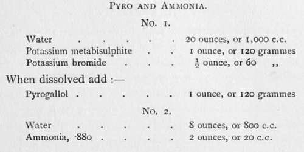

Various Developers
Description
This section is from the book "The Barnet Book Of Photography", by Herts Barnet. Also available from Amazon: The Barnet Book Of Photography.
Various Developers
We may now briefly review some of the many developers which are at our disposal, each possessing some more or less distinctive characteristic, yet all being dependent on the same principles.
First we have a developer somewhat similar to the one already given, but in two separate solutions.
Solution No. 1
Water ... 20 ounces, or 1,000 c.c.
Sodium sulphite . 2 ,, or ioo grammes.
Hydroquinone . 160 grains, or 18 ,,
Citric acid . . 6o ,, or 6
Potassium bromide . 30 ,, or 3 „
Solution No. 2
Water ... 20 ounces, or 1,000 c.c. Caustic soda . . 160 grains, or 18 grammes.
These are to be kept in separate bottles, and labelled No. 1 and No. 2. Were we sure that the exposure is correct we should merely take equal parts of each and flow the mixture over the plate ; but to guard against over-exposure taking us by surprise and the whole plate darkening before we can apply a remedy, we will first take, say, 3 ounces or as much as will comfortably cover the plate of No. 1, and add to it only 1 ounce of No. 2. Pour this on, rock the dish and watch.
Should no darkening occur after half a minute or so, pour the developer back into the measure, add another ounce of No. 2 and try again, and after another minute we may in like manner add the third ounce of No. 2, thus making the developer up to normal strength.
If, now, the image should seem to hang fire, pour the developer off; add to it its own bulk of water, and half an ounce, or in extreme cases 1 ounce more of No. 2 and proceed as before.
We are now employing the alkaline solution No. 2 as an accelerator, having added water to prevent the whole solution being too strong.
Another standard developer of the same class is as follows:—
No. 1
Water ..... 10 ounces, or 1,000 c.c. Potassium metabisulphite . . 35 grains, or 7-5 grammes Ortol......70 „ or 15 „
No. 2
Water..... io ounces, or 1,000 c.c.
Potassium carbonate ... J ounce, or 60 grammes.
Sodium sulphite .... if ounces, or 180 grammes.
Potassium bromide ... 5 grains, or 1 gramme.
As in the previous case, equal portions of each are to be taken for normal use or modified as before and used tentatively.
One more developer of the kind may be given, which, if a little more difficult to use at first on account of its extraordinary rapidity, is exceedingly useful when once mastered; this is Rodinal. Rodinal is sold as a solution ready made, and needs only to be diluted to be ready for use, the proportions being from i to 20 parts to 1 to 70 parts of water. With this the 10 per cent, solution of bromide of potassium is very useful, as, owing to its extremely energetic character, the image often flashes up in a rather disconcerting manner.
Now, with all the developers thus far mentioned, the same portion of solution can be used repeatedly—that is, for several negatives in succession—provided the proportions are right—and they do not produce a stain on either the fingers or the plate. To the same class belong a number of other more or less modern introductions—such as Edinol, Amidol, Eikonogen, Kachin, Glycin, Synthol, etc. But many practitioners still remain loyal to the older fashioned pyrogallic acid or pyrogallol, the brownish stain which it imparts to the film being considered by some as an advantage in printing. Two formulae are here given in which carbonate of soda and ammonia are respectively used as the alkali:—
For an ordinary developer equal parts of No. i and No. 2 are taken, or the potassium bromide may be used as a separate solution and used as required. The other formula is :—
For use take 1 dram of each to from 4 to 6 ounces of water, but until the condition of the plate as regards exposure is ascertained it will be best to take 1 dram of No. 1 and \ dram of No. 2 to 6 ounces of water, adding the other \ dram of No. 2 as it may seem desirable.
For a pyrogallic developer this gives a minimum amount of stain and works slowly.
Some other developing formulae are given in the article entitled " Some Useful Formulae" (p. 265).
Density
One occasionally hears the complaint that such and such a plate or formula will not give sufficient density j but it should be borne in mind that density can always be obtained if the plate be left long enough in the developer, but a slightly over-exposed plate may quickly darken on the surface and appear nearly opaque when examined by transmitted light, but will prove after fixing to be much too thin. Indeed, developers vary a good deal in the apparent density shown before fixation; hence the desirability of adhering rigidly to one developer and always judging the progress of development by one and the same light, so that one's judgment may not be misled by the specific variations of different developers or the greater or less intensity of the light.
Softer Effects
It is quite a common fault to develop negatives too much, so that they yield a print of a kind commonly dubbed " soot and whitewash," on account of the harsh whiteness of the high lights and the impenetrable blackness of the shadows. Formerly, the ideal negative was held to be that which was all but solid or opaque in those parts representing the highest lights and clear transparent film in the deepest shadows ; but closer observation and a better understanding of Nature have revealed the fact that, unless it be in some very small spot indeed, pure white and jet black in a print are inartistic and unnatural; but with most standard developers such as those given above it is probable that before the least affected parts have yielded to the developer the highest lights have accumulated such deposit as to have become quite or nearly opaque, and hence the recommendation given earlier in this chapter to dilute the developer with a larger proportion of water, for with this the negative is very slow to gain density, whilst detail still continues to come up in the shadow parts, and a softer, more delicate negative is the result.
Of the fixing-bath, which has already been mentioned and formulae given, nothing more need be said.
Washing And Drying
The above heading suggests operations of such simplicity as to require no special description, yet it is not too much to say that these commonplace performances properly carried out are in their way as essential as any part of the procedure. Hyposulphite of soda in solution has, in the course of fixation, permeated every part of the soft gelatinous film, and the subsequent washing must be of such a kind that not a trace shall remain ; and the only sure way to accomplish this is to leave the plate, if possible, in a vertical position for two hours in a constantly flowing stream of water. Metal troughs may be obtained with grooves to hold the plates vertically, from which the contaminated water passes out at the bottom as fresh water flows in from a supply-tap left running; or, if water be limited, it may be sufficient to soak the plate in water, changing the water ten or a dozen times during an hour, at intervals of, say, five minutes. Nothing is so sure to bring its own punishment as careless or imperfect washing of a negative, for in a day or two, or perhaps not for a week or more, the hypo left in the film begins to crystallise on the surface, and nothing can cure or restore it.
Prescriptions are given for the elimination of hypo by chemical means; but water, and plenty of it, is the best eliminator, and the reader is not recommended to try any other as yet.
After the long immersion in fluids it will be understood that the gelatine film is in a very sodden condition, and in warm weather it may be necessary to have recourse to a few minutes' immersion in a saturated solution of alum to prevent the film from partially dissolving and leaving the glass altogether; but in any case more than trivial attention should be given to secure as rapid drying as possible. Ordinary drying racks sold for the purpose often prove pitfalls, the plates being so close together that unless a vigorous draught of air be available some portions will occupy a most unnecessary time, and it is just this unequal drying which must be avoided. Perhaps the readiest means is to lay along the top of a shelf a strip of blotting-paper folded to two or three thicknesses, and, having allowed the water to drip from the plate, stand it on end on the blotting, and let it rest against the wall at the back of the shelf, film side outwards; or, better still, French wire nails may be driven into the wall, between two of which a plate may rest cornerwise. In damp weather, when the atmosphere does not encourage rapid drying, it will be wisest to soak the plates in methylated spirit for a quarter of an hour before drying ; they will then dry in ten minutes.
Continue to:
Tags
paper, print, negative, exposure, lens, development, camera, focus